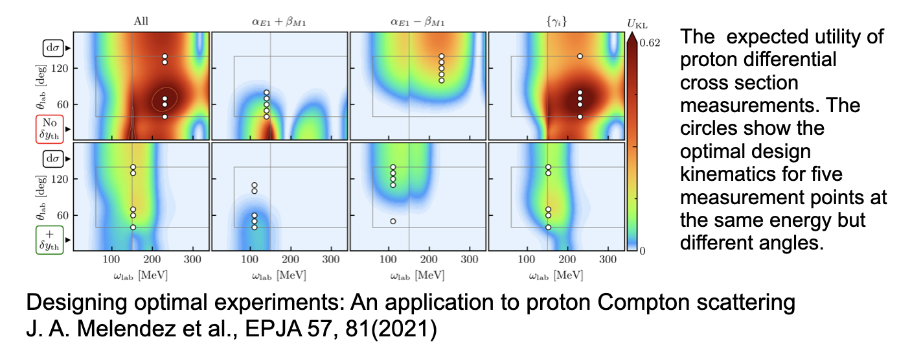

Machine Learning, artificial intelligence and quantum technologies at the university of Oslo and Norway; research, education and exciting possibilities in the future job market
What is this talk about?
The main emphasis is to give you a short and pedestrian introduction to the whys and hows we can use (with several examples) machine learning methods and quantum technologies in physics. And why this could (or should) be of interest. I will also try to link to potential job possibilities and educational activities.
These slides are at https://mhjensenseminars.github.io/MachineLearningTalk/doc/web/overview.html. Scroll down the page.
- Parts of the talk based on Artificial Intelligence and Machine Learning in Nuclear Physics, Amber Boehnlein et al., arXiv:2112.02309 and Reviews Modern of Physics , 2022.
Many folks to thank
- MSU: Ben Hall, Jane Kim, Julie Butler, Danny Jammoa, Nicholas Cariello, Johannes Pollanen (Expt), Niyaz Beysengulov (Expt), Dean Lee, Scott Bogner, Heiko Hergert, Matt Hirn, Huey-Wen Lin, Alexei Bazavov, Andrea Shindler and Angela Wilson
- UiO: Stian Bilek, Heine Åbø (now OsloMet), Håkon Emil Kristiansen, Øyvind Schøyen Sigmundsson, Jonas Boym Flaten, Linus Ekstrøm, Oskar Leinoen, Kristian Wold (now OsloMet), Lasse Vines (Expt) Andrej Kuznetsov (Expt), David Rivas Gongora (Expt) and Marianne Bathen (Expt, now PD at ETH)
This work is supported by the U.S. Department of Energy, Office of Science, office of Nuclear Physics under grant No. DE-SC0021152 and U.S. National Science Foundation Grants No. PHY-1404159 and PHY-2013047 and the Norwegian ministry of Education and Research for PhD fellowships.
Basic activities, Overview
- Machine Learning applied to classical and quantum mechanical systems and analysis of physics experiments
- Quantum Engineering
- Quantum algorithms
- Quantum Machine Learning
What has happened during the last two years at CCSE@UiO?
During the last three years we have started a large scientific activity on Quantum Computing and Machine Learning at the Center for Computing in Science Education (CCSE), with four PhD students hired since October 2019 and several master of Science students. This activity spans from the development of quantum-mechanical many-particle theories for studying systems of interest for making quantum computers, via the development of machine learning and quantum algorithms for solving classical and quantum mechanical problems to exploring quantum machine learning algorithms.
Fall 2022 we will also have a new post-doctoral fellow working on quantum computing (many-body theories) at the center for Materials Science and Nanotechnology at the University of Oslo.
More activities
- Center of Materials Science UiO, Lasse Vines (Expt) Andrej Kuznetsov(Expt), David Rivas Gongora (Expt) and Marianne Bathen (Expt, now PD at ETH)
- Gemini center on Quantum Computing (SINTEF-UiO-NTNU)
- Analysis of expirements in subatomic physics
- Quantum information theoyr at the Department of Mathematics
- OsloMet and Simula Research lab
- Machine learning and computational neuroscience
- and probably many I have forgotten....please excuse me
A simple perspective on the interface between ML and Physics

ML in Nuclear Physics

AI/ML and some statements you may have heard (and what do they mean?)
- Fei-Fei Li on ImageNet: map out the entire world of objects (The data that transformed AI research)
- Russell and Norvig in their popular textbook: relevant to any intellectual task; it is truly a universal field (Artificial Intelligence, A modern approach)
- Woody Bledsoe puts it more bluntly: in the long run, AI is the only science (quoted in Pamilla McCorduck, Machines who think)
If you wish to have a critical read on AI/ML from a societal point of view, see Kate Crawford's recent text Atlas of AI
Here: with AI/ML we intend a collection of machine learning methods with an emphasis on statistical learning and data analysisScientific Machine Learning
An important and emerging field is what has been dubbed as scientific ML, see the article by Deiana et al Applications and Techniques for Fast Machine Learning in Science, arXiv:2110.13041
The authors discuss applications and techniques for fast machine learning (ML) in science – the concept of integrating power ML methods into the real-time experimental data processing loop to accelerate scientific discovery. The report covers three main areas
- applications for fast ML across a number of scientific domains;
- techniques for training and implementing performant and resource-efficient ML algorithms;
- and computing architectures, platforms, and technologies for deploying these algorithms.
Machine Learning and Physics
Machine learning is an extremely rich field, in spite of its young age. The increases we have seen during the last three decades in computational capabilities have been followed by developments of methods and techniques for analyzing and handling large date sets, relying heavily on statistics, computer science and mathematics. The field is rather new and developing rapidly.
Popular software packages written in Python for ML are
and more. These are all freely available at their respective GitHub sites. They encompass communities of developers in the thousands or more. And the number of code developers and contributors keeps increasing.
Lots of room for creativity
Not all the algorithms and methods can be given a rigorous mathematical justification, opening up thereby for experimenting and trial and error and thereby exciting new developments.
A solid command of linear algebra, multivariate theory, probability theory, statistical data analysis, optimization algorithms, understanding errors and Monte Carlo methods is important in order to understand many of the various algorithms and methods.
Job market, a personal statement: A familiarity with ML is almost becoming a prerequisite for many of the most exciting employment opportunities. And add quantum computing and there you are!
Types of machine learning
The approaches to machine learning are many, but are often split into two main categories. In supervised learning we know the answer to a problem, and let the computer deduce the logic behind it. On the other hand, unsupervised learning is a method for finding patterns and relationship in data sets without any prior knowledge of the system. Some authours also operate with a third category, namely reinforcement learning. This is a paradigm of learning inspired by behavioural psychology, where learning is achieved by trial-and-error, solely from rewards and punishment.
Another way to categorize machine learning tasks is to consider the desired output of a system. Some of the most common tasks are:
- Classification: Outputs are divided into two or more classes. The goal is to produce a model that assigns inputs into one of these classes. An example is to identify digits based on pictures of hand-written ones. Classification is typically supervised learning.
- Regression: Finding a functional relationship between an input data set and a reference data set. The goal is to construct a function that maps input data to continuous output values.
- Clustering: Data are divided into groups with certain common traits, without knowing the different groups beforehand. It is thus a form of unsupervised learning.
Examples
The large amount of degrees of freedom pertain to both theory and experiment in physics. With increasingly complicated experiments that produce large amounts data, automated classification of events becomes increasingly important. Here, deep learning methods offer a plethora of interesting research avenues.
- Reconstruction of particle trajectories or classification of events are typical examples where ML methods are being used. However, since these data can often be extremely noisy, the precision necessary for discovery in physics requires algorithmic improvements. Research along such directions, interfacing nuclear and particle physics with AI/ML is expected to play a significant role in physics discoveries related to new facilities. The treatment of corrupted data in imaging and image processing is also a relevant topic.
- Design of detectors represents an important area of applications for ML/AI methods in nuclear physics.
And more
- An important application of AI/ML methods is to improve the estimation of bias or uncertainty due to the introduction of or lack of physical constraints in various theoretical models.
- In theory, we expect to use AI/ML algorithms and methods to improve our knowledge about correlations of physical model parameters in data for quantum many-body systems. Deep learning methods show great promise in circumventing the exploding dimensionalities encountered in quantum mechanical many-body studies.
- Merging a frequentist approach (the standard path in ML theory) with a Bayesian approach, has the potential to infer better probabilitity distributions and error estimates. As an example, methods for fast Monte-Carlo- based Bayesian computation of nuclear density functionals show great promise in providing a better understanding
- Machine Learning and Quantum Computing is a very interesting avenue to explore. See for example talk of Sofia Vallecorsa.
Selected references
- Mehta et al. and Physics Reports (2019).
- Machine Learning and the Physical Sciences by Carleo et al
- Ab initio solution of the many-electron Schrödinger equation with deep neural networks by Pfau et al.
- Particle Data Group summary on ML methods
- And the BAND collaboration at https://bandframework.github.io/
More references, Quantum Computing
Machine Learning and Quantum Computing hold great promise in tackling the ever increasing dimensionalities. A hot new field is Quantum Machine Learning, see for example the recent textbook by Maria Schuld and Francesco Petruccione.
- Master of Science thesis of Stian Bilek, Quantum Computing: Many-Body Methods and Machine Learning, August 2020
- Master of Science thesis of Heine Åbø, Quantum Computing and Many-Particle Problems, June 2020, now at OsloMet
- Master of Science thesis of Kristian Wold, Parameterized Quantum Circuits for Machine Learning, September 2021, now at OsloMet
- Marianne Etzelmueller Bathen's PhD, December 2020
What are the basic ingredients?
Almost every problem in ML and data science starts with the same ingredients:
- The dataset \( \mathbf{x} \) (could be some observable quantity of the system we are studying)
- A model which is a function of a set of parameters \( \mathbf{\alpha} \) that relates to the dataset, say a likelihood function \( p(\mathbf{x}\vert \mathbf{\alpha}) \) or just a simple model \( f(\mathbf{\alpha}) \)
- A so-called loss/cost/risk function \( \mathcal{C} (\mathbf{x}, f(\mathbf{\alpha})) \) which allows us to decide how well our model represents the dataset.
We seek to minimize the function \( \mathcal{C} (\mathbf{x}, f(\mathbf{\alpha})) \) by finding the parameter values which minimize \( \mathcal{C} \). This leads to various minimization algorithms. It may surprise many, but at the heart of all machine learning algortihms there is an optimization problem.
Unsupervised learning in nuclear physics, Argon-46 by Solli, Bazin, Kuchera, MHJ, Strauss.
Two- and three-dimensional representations of two events from the Argon-46 experiment. Each row is one event in two projections, where the color intensity of each point indicates higher charge values recorded by the detector. The bottom row illustrates a carbon event with a large fraction of noise, while the top row shows a proton event almost free of noise.

Quantum Monte Carlo and deep learning
Given a hamiltonian \( H \) and a trial wave function \( \Psi_T \), the variational principle states that the expectation value of \( \langle H \rangle \), defined through
$$
\langle E \rangle =
\frac{\int d\boldsymbol{R}\Psi^{\ast}_T(\boldsymbol{R})H(\boldsymbol{R})\Psi_T(\boldsymbol{R})}
{\int d\boldsymbol{R}\Psi^{\ast}_T(\boldsymbol{R})\Psi_T(\boldsymbol{R})},
$$
is an upper bound to the ground state energy \( E_0 \) of the hamiltonian \( H \), that is
$$
E_0 \le \langle E \rangle.
$$
In general, the integrals involved in the calculation of various expectation values are multi-dimensional ones. Traditional integration methods such as the Gauss-Legendre will not be adequate for say the computation of the energy of a many-body system. Basic philosophy: Let a neural network find the optimal wave function
Monte Carlo methods and Neural Networks
Machine Learning and the Deuteron by Kebble and Rios and Variational Monte Carlo calculations of \( A\le 4 \) nuclei with an artificial neural-network correlator ansatz by Adams et al.
Adams et al:
$$
\begin{align}
H_{LO} &=-\sum_i \frac{{\vec{\nabla}_i^2}}{2m_N}
+\sum_{i < j} {\left(C_1 + C_2\, \vec{\sigma_i}\cdot\vec{\sigma_j}\right)
e^{-r_{ij}^2\Lambda^2 / 4 }}
\nonumber\\
&+D_0 \sum_{i < j < k} \sum_{\text{cyc}}
{e^{-\left(r_{ik}^2+r_{ij}^2\right)\Lambda^2/4}}\,,
\tag{1}
\end{align}
$$
where \( m_N \) is the mass of the nucleon, \( \vec{\sigma_i} \) is the Pauli matrix acting on nucleon \( i \), and \( \sum_{\text{cyc}} \) stands for the cyclic permutation of \( i \), \( j \), and \( k \). The low-energy constants \( C_1 \) and \( C_2 \) are fit to the deuteron binding energy and to the neutron-neutron scattering length
Deep learning neural networks, Variational Monte Carlo calculations of \( A\le 4 \) nuclei with an artificial neural-network correlator ansatz by Adams et al.
An appealing feature of the neural network ansatz is that it is more general than the more conventional product of two- and three-body spin-independent Jastrow functions
$$
\begin{align}
|\Psi_V^J \rangle = \prod_{i < j < k} \Big( 1-\sum_{\text{cyc}} u(r_{ij}) u(r_{jk})\Big) \prod_{i < j} f(r_{ij}) | \Phi\rangle\,,
\tag{2}
\end{align}
$$
which is commonly used for nuclear Hamiltonians that do not contain tensor and spin-orbit terms. The above function is replaced by a four-layer Neural Network.

Gnech et al, Variational Monte Carlo calculations of \( A\le 6 \) nuclei Few Body Systems 63, (2022)

The electron gas in three dimensions with \( N=14 \) electrons
Jane Kim, Bryce Fore, Alessandro Lovato and MHJ, in preparation

Extrapolations and model interpretability
When you hear phrases like predictions and estimations and correlations and causations, what do you think of? May be you think of the difference between classifying new data points and generating new data points. Or perhaps you consider that correlations represent some kind of symmetric statements like if \( A \) is correlated with \( B \), then \( B \) is correlated with \( A \). Causation on the other hand is directional, that is if \( A \) causes \( B \), \( B \) does not necessarily cause \( A \).
Physics based statistical learning and data analysis
The above concepts are in some sense the difference between old-fashioned machine learning and statistics and Bayesian learning. In machine learning and prediction based tasks, we are often interested in developing algorithms that are capable of learning patterns from given data in an automated fashion, and then using these learned patterns to make predictions or assessments of newly given data. In many cases, our primary concern is the quality of the predictions or assessments, and we are less concerned about the underlying patterns that were learned in order to make these predictions.
Physics based statistical learning points however to approaches that give us both predictions and correlations as well as being able to produce error estimates and understand causations. This leads us to the very interesting field of Bayesian statistics.
Bayes' Theorem
Bayes' theorem
$$
p(X\vert Y)= \frac{p(X,Y)}{\sum_{i=0}^{n-1}p(Y\vert X=x_i)p(x_i)}=\frac{p(Y\vert X)p(X)}{\sum_{i=0}^{n-1}p(Y\vert X=x_i)p(x_i)}.
$$
The quantity \( p(Y\vert X) \) on the right-hand side of the theorem is evaluated for the observed data \( Y \) and can be viewed as a function of the parameter space represented by \( X \). This function is not necessarily normalized and is normally called the likelihood function.
The function \( p(X) \) on the right hand side is called the prior while the function on the left hand side is the called the posterior probability. The denominator on the right hand side serves as a normalization factor for the posterior distribution.
Folding and unfolding and response functions
A good read on folding/unfolding is An Unfolding Method for High Energy Physics Experiments by Volker Blobel
See notebook details and examples of simple data reconstructed with Gaussian processes.
Quantified limits of the nuclear landscape
Neufcourt et al., Phys. Rev. C 101, 044307 (2020)Predictions made with eleven global mass model and Bayesian model averaging

Constraining the equation of state for dense nuclear matter
G. Raaijmakers et al., Constraining the Dense Matter Equation of State with Joint Analysis of NICER and LIGO/Virgo Measurements, AJ Letters, 893, L21 (2020)
Experimental design
Beam time and compute cycles are expensive!
- Bayesian experimental design provides a framework in which experiments can be designed using the best experimental and theoretical information available
- The utility function is designed to encode the goals of the experiment and the constraints inherent in carrying it out.
- Once the utility function and the possible designs have been specified, the optimal design is simply the scenario that maximizes the expected utility function over the domain of possible designs.

Quantum Technologies
Quantum Engineering
- be scalable
- have qubits that can be entangled
- have reliable initializations protocols to a standard state
- have a set of universal quantum gates to control the quantum evolution
- have a coherence time much longer than the gate operation time
- have a reliable read-out mechanism for measuring the qubit states
- and many more
Candidate systems
- Superconducting Josephon junctions
- Single photons
- Trapped ions and atoms
- Nuclear Magnetic Resonance
- Quantum dots, expt at MSU
- Point Defects in semiconductors, experiments at UiO, center for Materials Science
- more
Electrons (quantum dots) on superfluid helium
Electrons on superfluid helium represent a promising platform for investigating strongly-coupled qubits.
Therefore a systematic investigation of the controlled generation of entanglement between two trapped electrons under the influence of coherent microwave driving pulses, taking into account the effects of the Coulomb interaction between electrons, is of significant importance for quantum information processing using trapped electrons.
- Time-Dependent full configuration interaction theory
- Time-dependent Coupled-Cluster theory
- Designing quantum circuits
Education
- Build up a series of courses in QIS, inspiration QuSTEAM (Quantum Information Science, Technology, Engineering, Arts and Mathematics) initiative from USA
- Bachelor program in Computational Science and Data Science
- study direction/option in quantum technologies
- study direction/option in Artificial Intelligence and Machine Learning
- Plans at UiO for such a program, but also a more dedicated one on Computational Physics
Coordination across university boundaries?
QuSTEAM Model

Courses, Prototype
The Center for Computing in Science Education at UiO could be the entity which provides the pedagogical resourses. It has research experience on how do we design curricula so that students develop deep knowledge that is connected and useful.
- Information Systems
- From Classical Information theory to Quantum Information theory
- Classical vs. Quantum Logic
- Classical and Quantum Laboratory
- Discipline-Based Quantum Mechanics
- Quantum Software
- Quantum Hardware
- more
Important Issues to think of
- Lots of conceptual learning: superposition, entanglement, QIS applications, etc.
- Coding is indispensable. That is why this should be a part of a CS/DS program
- Teamwork, project management, and communication are important and highly valued
- Engagement with industry: guest lectures, virtual tours, co-ops, and/or internships.
- Diversity needs to be a priority
- Mentorship should begin the moment students enroll.
Observations
- Students do not really know what QIS is. This may be important when advertising
- There is conflation of “Quantum Information Science” with “Quantum computing”.
- Students perceive that a graduate degree is necessary to work in QIS. A BSc will help.
Future Needs/Problems (US observations mostly but transfer most likely to Europe as well)
- There are already (USA) great needs for specialized people (Ph. D. s, postdocs), but also needs of people with a broad overview of what is possible in QIS.
- There are not enough potential employees in QIS (USA). It is a supply gap, not a skills gap.
- A BSc with specialization is a good place to start
- It is tremendously important to get everyone speaking the same language. Facility with the vernacular of quantum mechanics is a big plus.
- There is a huge list of areas where technical expertise may be important. But employers are often more concerned with attributes like project management, working well in a team, interest in the field, and adaptability than in specific technical skills.